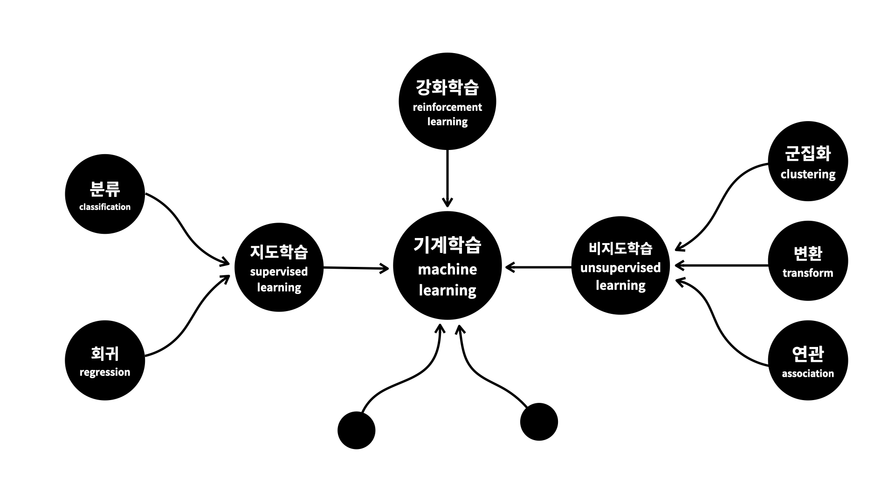
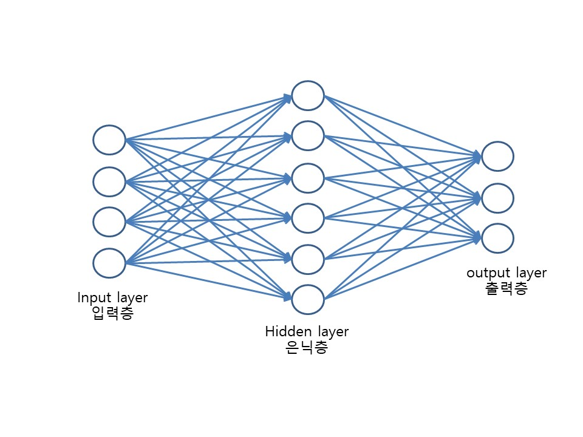

인공지능 (AI, Artificial Intelligence)
컴퓨터가 인간처럼 학습하고 판단하며 문제를 스스로 해결할 수 있도록 만드는 기술의 총칭입니다. 좁게는 특정 작업을 수행하는 프로그램부터, 넓게는 인간 수준의 사고를 모방하는 시스템까지 포함합니다.
예시: 음성 인식, 이미지 분류, 챗봇, 추천 시스템
AI Glossary — 자주 쓰이는 핵심 용어 정리
컴퓨터가 인간처럼 학습하고 판단하며 문제를 스스로 해결할 수 있도록 만드는 기술의 총칭입니다. 좁게는 특정 작업을 수행하는 프로그램부터, 넓게는 인간 수준의 사고를 모방하는 시스템까지 포함합니다.

명시적으로 규칙을 프로그래밍하지 않아도, 데이터를 통해 컴퓨터가 스스로 패턴을 찾고 학습하는 기술입니다. 학습 방식에 따라 지도학습, 비지도학습, 강화학습으로 나뉩니다.

인간의 뇌 신경망을 모방한 인공신경망을 여러 층(Layer)으로 깊게 쌓아 학습하는 기술입니다. 머신러닝의 한 분야로, 대량의 데이터와 높은 연산 능력이 필요하지만 매우 높은 정확도를 보입니다.
| 용어 | 설명 | 관련 예시 |
|---|---|---|
| NLP (자연어 처리) |
컴퓨터가 인간의 언어(텍스트, 음성)를 이해하고 생성하는 기술 | ChatGPT, 파파고, 시리 |
| 컴퓨터 비전 (Computer Vision) |
이미지나 영상을 분석하여 물체, 사람, 상황 등을 인식하는 기술 | 얼굴 인식, CCTV 분석, 의료 영상 |
| 강화학습 (Reinforcement Learning) |
보상과 벌칙을 통해 AI가 스스로 최적의 행동을 익혀나가는 학습 방법 | AlphaGo, 게임 AI, 로봇 제어 |
| 생성형 AI (Generative AI) |
텍스트, 이미지, 음악 등 새로운 콘텐츠를 스스로 생성하는 AI | ChatGPT, DALL-E, Stable Diffusion |
| 파라미터 (Parameter) |
AI 모델이 학습을 통해 조정하는 내부 값. 많을수록 복잡한 패턴 학습 가능 | GPT-4는 약 1조 개 파라미터 보유 |
| AGI (범용 인공지능) |
인간처럼 어떤 분야든 스스로 학습하고 문제를 해결하는 AI (현재 연구 단계) | 아직 실현되지 않은 미래 기술 |
| 할루시네이션 (Hallucination) |
AI가 사실이 아닌 내용을 마치 사실인 것처럼 자신 있게 답하는 현상 | AI가 존재하지 않는 논문을 인용하는 사례 |